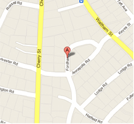

TC56-09
ALD. SALVUCCI, LENNON AND CICCONE on behalf of Edward Asaley, 29 Fordham Road, Newton requesting a discussion about possibly implementing a four-way stop sign at the intersection of Annapolis and Fordham Roads.
Petitioner(s)
Alderman Salvucci
Alderman Lennon
Alderman Ciccone
Filled
1/21/10 @ 10:44 PM
Ward / Precinct
3 / 2
Ordinances
No
Geotag
On the docket Traffic Council
Next Meeting 5/1/2011
